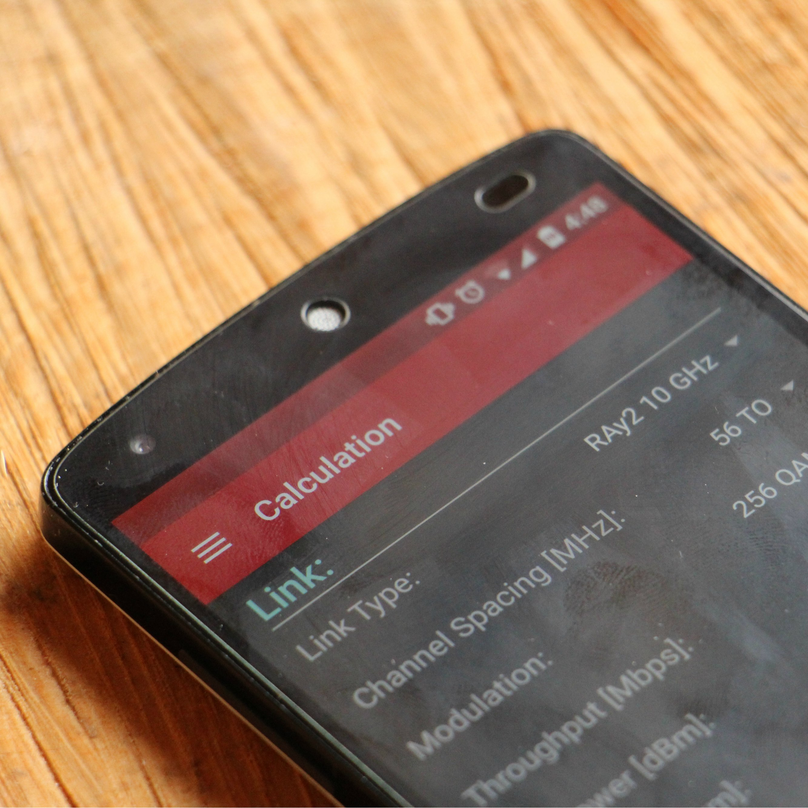
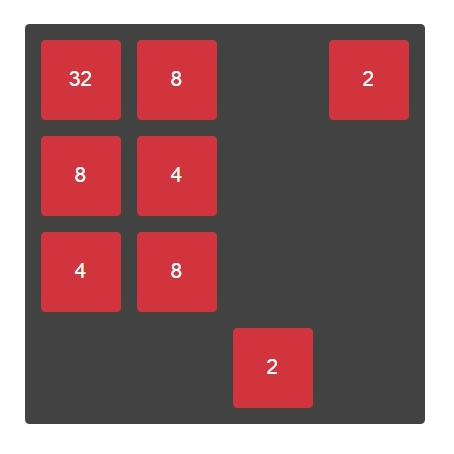
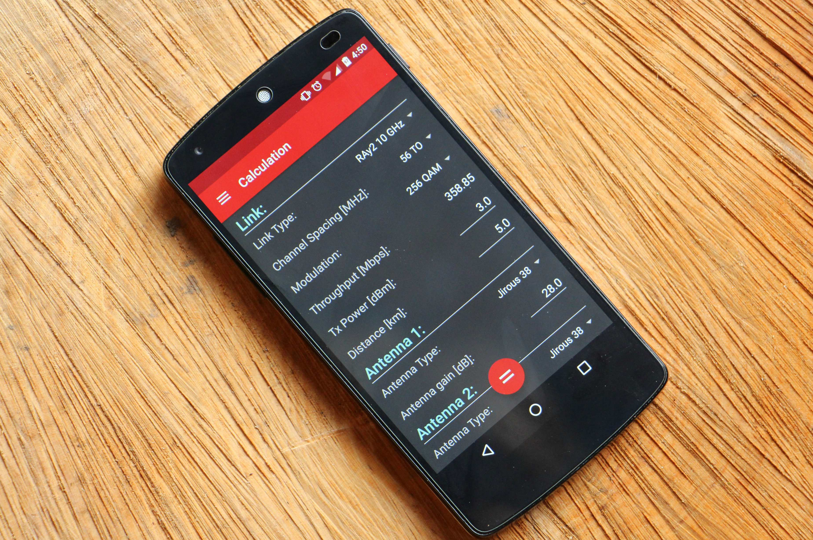
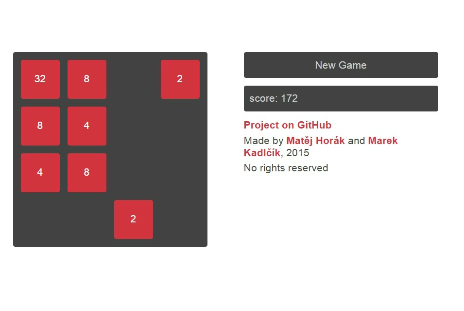

<!DOCTYPE //if lt IE 8><html class="no-js ie ie7" lang="en"></html><!--if IE 8html.no-js.ie.ie8(lang='en')--><!-- [if (gte IE 8)|!(IE)] <!--><html class="no-js" lang="en"><!-- <![endif]--><head><!--- Basic Page Needs
==================================================--><meta charset="utf-8"/><title>Mat&ecaron;j Hor&aacute;k</title><meta name="description" content="Website about Matěj Horák called Horm. Matěj is software developer, GDG organizer or just man who likes technologies, music and games."/><meta name="keywords" content="Matej, Matěj, Horak, Horák, Horm, Developer"/><meta name="author" content="Matěj Horák"/><!--Mobile Specific Metas
==================================================--><meta name="viewport" content="width=device-width, initial-scale=1, maximum-scale=1"/><!--CSS
==================================================--><link rel="stylesheet" href="css/default.css"/><link rel="stylesheet" href="css/layout.css"/><link rel="stylesheet" href="css/media-queries.css"/><link rel="stylesheet" href="css/magnific-popup.css"/><link rel="stylesheet" href="css/ionicons/css/ionicons.css"/><link href="https://fonts.googleapis.com/css?family=Open+Sans&amp;subset=latin,latin-ext" rel="stylesheet" type="text/css"/><script type="text/javascript" src="js/materialize.min.js"></script><!--Script
==================================================--><script src="js/modernizr.js"></script><script>(function(i,s,o,g,r,a,m){i['GoogleAnalyticsObject']=r;i[r]=i[r]||function(){
  (i[r].q=i[r].q||[]).push(arguments)},i[r].l=1*new Date();a=s.createElement(o),
    m=s.getElementsByTagName(o)[0];a.async=1;a.src=g;m.parentNode.insertBefore(a,m)
})(window,document,'script','https://www.google-analytics.com/analytics.js','ga');
ga('create', 'UA-80487928-1', 'auto');
ga('send', 'pageview');</script><!--Favicons
==================================================--><link rel="shortcut icon" href="favicon.png"/><link rel="image_src" href="./images/header-background.jpg"/></head><body><!--Header
==================================================--><header id="home"><nav id="nav-wrap"><a class="mobile-btn" href="#nav-wrap" title="Show navigation">Show navigation</a><a class="mobile-btn" href="#" title="Hide navigation">Hide navigation</a><ul class="nav" id="nav"><li class="current"><a class="smoothscroll" href="#home">Home</a></li><li><a class="smoothscroll" href="#about">About me</a></li><li><a class="smoothscroll" href="#skills">Skills</a></li><li><a class="smoothscroll" href="#portfolio">My projects</a></li><li><a class="smoothscroll" href="#contact">Contact me</a></li></ul><!-- end #nav--></nav><!-- end #nav-wrap--><div class="row banner"><div class="banner-text"><h1 class="responsive-headline">Mat&ecaron;j Hor&aacute;k</h1><h3>I&apos;m software developer, GDG organizer or just a man who likes technologies. You may know my nickname
Horm but I&apos;m not sure if you know something about me. So let&apos;s start scrolling or click on some links
below to see some new about me!</h3><hr/><ul class="social"><li><a href="http://google.com/+MatejHorakHorm/" target="_blank"><i class="fa fa-google-plus fa-2x"></i></a></li><li><a href="http://twitter.com/horakmat" target="_blank"><i class="fa fa-twitter fa-2x"></i></a></li><li><a href="http://stackoverflow.com/users/5650456/hormcz?tab=profile" target="_blank"><i class="fa fa-stack-overflow fa-2x"></i></a></li><li><a href="http://linkedin.com/in/horakmat" target="_blank"><i class="fa fa-linkedin fa-2x"></i></a></li><li><a href="http://github.com/Horm" target="_blank"><i class="fa fa-github fa-2x"></i></a></li><li><a href="https://medium.com/@horm" target="_blank"><i class="fa fa-medium fa-2x"></i></a></li><li><a href="http://instagram.com/horakmat" target="_blank"><i class="fa fa-instagram fa-2x"></i></a></li></ul></div></div><p class="scrolldown"><a class="smoothscroll" href="#about"><i class="icon-down-circle"></i></a></p></header><!-- Header End--><!--About Section
==================================================--><section id="about"><div class="row"><div class="row section-intro"><div class="col-twelve with-bottom-line"><h1>Who am I?</h1><p class="lead">When you say name Mat&ecaron;j Hor&aacute;k, you can expect person, who has many activities and
interests.
Definitely my aim in life is making the world better.
How? Apart from writing the code, organizing events with GDG and
playing the guitar, I try to live every day as good as possible.</p></div></div><div class="three columns"></div><div class="nine columns main-col"><h2>Developer</h2><p>Since my childhood I&apos;ve found computers very interesting and thanks to programming I can create many new
things as websites, mobile applications or smart hidden tools. Do I want to create artificial
intelligence? Not at all, I think that full-featured AI is bad. However, small forms of AI are OK.</p><p>When I learned some new programming technologies I&apos;ve found communities very helpful. I feel the duty to
reciprocate it so I&apos;m organizer in Google Developer Group in Czech Republic.</p><h2>Musician</h2><p>I play the electric guitar. It&apos;s my favourite hobby because during the playing I can clear my head. I&apos;m
playing in the small band. I don&apos;t have favourites genres but my favourite bands are Simple Plan,
Paramore and Nickelback.</p><h2>Gamer</h2><p>No time for it but it&apos;s one of the parts of my entertainment. I like games as Age of Empires, Rayman,
Life is Strange and MMORPG SWTOR...</p></div><!-- end .main-col--></div></section><!-- About Section End--><!--features Section
==================================================--><section id="skills"><div class="row section-intro"><div class="col-twelve with-bottom-line"><h1>Skills...</h1><p class="lead">In development I like to develop Android Apps in Java language, websites and desktop
applications in
HTML, CSS and JavaScript. During development I prefer Test Driven Development and clean code
practices.</p></div></div><div class="row features-content"><div class="features-list block-1-3 block-s-1-2 block-tab-full group"><div class="bgrid feature"><span class="icon"><i class="icon ion-coffee"></i></span><div class="service-content"><h3 class="h05">Kotlin (Java)</h3></div></div><!-- /bgrid--><div class="bgrid feature"><span class="icon"><i class="icon ion-social-android"></i></span><div class="service-content"><h3 class="h05">Android Development</h3></div></div><!-- /bgrid--><div class="bgrid feature"><span class="icon"><i class="icon ion-fork-repo"></i></span><div class="service-content"><h3 class="h05">Git</h3></div></div><!-- /bgrid--><div class="bgrid feature"><span class="icon"><i class="icon ion-social-javascript"></i></span><div class="service-content"><h3 class="h05">JavaScript</h3></div></div><!-- /bgrid--><div class="bgrid feature"><span class="icon"><i class="icon ion-social-angular"></i></span><div class="service-content"><h3 class="h05">AngularJS</h3></div></div><!-- /bgrid--><div class="bgrid feature"><span class="icon"><i class="icon ion-waterdrop"></i></span><div class="service-content"><h3 class="h05">TDD &amp; Clean Code</h3></div></div><!-- /bgrid--></div><!-- features-list--></div><!-- features-content--></section><!-- /features--><!--Portfolio Section
==================================================--><section id="portfolio"><div class="row"><div class="twelve columns collapsed"><h1><span>Check out some my projects</span></h1><!-- portfolio-wrapper--><div class="bgrid-quarters s-bgrid-thirds cf" id="portfolio-wrapper"><div class="columns portfolio-item"><div class="item-wrap"><a href="#modal-01" title=""><div class="overlay"><div class="portfolio-item-meta"><h5>RAy Tools</h5><p>Mobile application</p></div></div><div class="link-icon"><i class="icon ion-more"></i></div></a></div></div><!-- item end--><div class="columns portfolio-item"><div class="item-wrap"><a href="#modal-02" title=""><div class="overlay"><div class="portfolio-item-meta"><h5>Our 2048</h5><p>Web Development</p></div></div><div class="link-icon"><i class="icon ion-more"></i></div></a></div></div><!-- item end--></div><!-- portfolio-wrapper end--></div><!-- twelve columns end--><!--Modal Popup
-----------------------------------------------------------------><div class="popup-modal mfp-hide" id="modal-01"><div class="description-box"><h4>RAy Tools</h4><p>This app is for microwave link calculations for radio units called RAy2. These units are produced by
Racom company and I created this app for this company. I tried to use new technologies for example
application is in Material Design and off course it supports different screen sizes.</p><span class="categories"><i class="fa fa-tag"></i>Android, Java</span></div><div class="link-box"><a href="https://play.google.com/store/apps/details?id=job.raytools" target="_blank">Download</a><a class="popup-modal-dismiss">Close</a></div></div><!-- modal-01 End--><div class="popup-modal mfp-hide" id="modal-02"><div class="description-box"><h4>Our 2048</h4><p>Our version of popular game 2048. It was made by GDG Garage &Zcaron;&dcaron;&aacute;r team for educational purposes.</p><span class="categories"><i class="fa fa-tag"></i>Web Development, HTML, CSS, JavaScript</span></div><div class="link-box"><a href="http://gdgzdar.github.io/2048/" target="_blank">Play</a><a href="https://github.com/gdgzdar/2048" target="_blank">Github</a><a class="popup-modal-dismiss">Close</a></div></div><!-- modal-02 End--></div><!-- row End--></section><!-- Portfolio Section End--><!--Contact Section
==================================================--><section id="contact"><div class="row section-head"><div class="two columns header-col"><h1><span>Get In Touch.</span></h1></div><div class="ten columns"><p class="lead">If you want to ask me about my person, projects or some technology please use this email:<b>info@horm.cz</b></p><p class="lead">In case of hiring please type subject message in this format:</p><p class="lead"><b>HIRE OFFER: Name of the company</b></p><p class="lead">Thank you</p></div></div></section><!-- Contact Section End--><!--footer
==================================================--><footer><div class="row"><div class="twelve columns"><ul class="social-links"><li><a href="http://google.com/+MatejHorakHorm/" target="_blank"><i class="fa fa-google-plus fa-2x"></i></a></li><li><a href="http://twitter.com/horakmat" target="_blank"><i class="fa fa-twitter fa-2x"></i></a></li><li><a href="http://stackoverflow.com/users/5650456/horm?tab=profile" target="_blank"><i class="fa fa-stack-overflow fa-2x"></i></a></li><li><a href="http://linkedin.com/in/horakmat" target="_blank"><i class="fa fa-linkedin fa-2x"></i></a></li><li><a href="http://github.com/Horm" target="_blank"><i class="fa fa-github fa-2x"></i></a></li><li><a href="https://medium.com/@horm" target="_blank"><i class="fa fa-medium fa-2x"></i></a></li><li><a href="http://instagram.com/horakmat" target="_blank"><i class="fa fa-instagram fa-2x"></i></a></li></ul><ul class="copyright"><li>&copy; 2014 CeeVee</li><li>Design by<a title="Styleshout" href="http://www.styleshout.com/">Styleshout</a></li><li>Edited by<a title="Matěj Horák" href="#">Mat&ecaron;j Hor&aacute;k</a></li></ul></div><div id="go-top"><a class="smoothscroll" title="Back to Top" href="#home"><i class="icon-up-open"></i></a></div></div></footer><!-- Footer End--><!--Java Script
==================================================--><script src="https://ajax.googleapis.com/ajax/libs/jquery/1.10.2/jquery.min.js"></script><script>window.jQuery || document.write('<script src="js/jquery-1.10.2.min.js"><\\/script>')</script><script type="text/javascript" src="js/jquery-migrate-1.2.1.min.js"></script><script src="js/jquery.flexslider.js"></script><script src="js/waypoints.js"></script><script src="js/jquery.fittext.js"></script><script src="js/magnific-popup.js"></script><script src="js/init.js"></script></body></html>